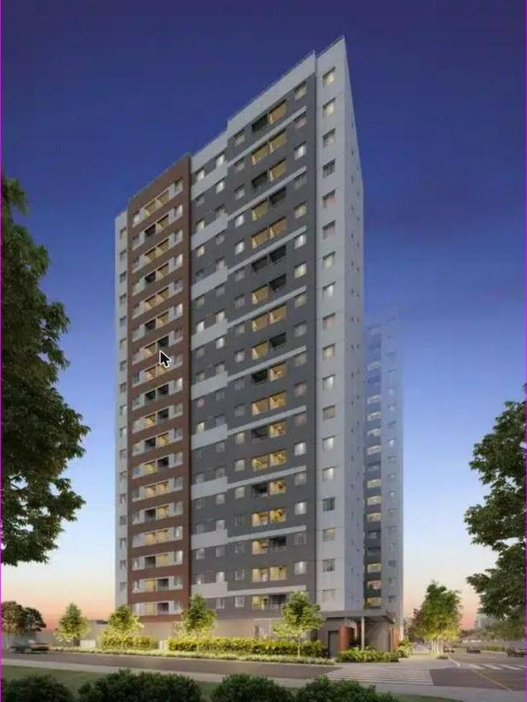

Minha Casa Minha VidaConstrutora parceira
Kazzas Santo Amaro
Kazzas · Santo Amaro, São Paulo
preçosob consulta
Lançamento
Sobre o empreendimento
A cerca de 2 minutos da Estação Adolfo Pinheiro, no centro comercial da zona sul. Enquadrado em R2V, HIS-1 e HIS-2.
- Quartos
- 1 e 2
- Metragem
- 24, 28/29 e 33 m²
Fase da obra
Breve lançamentoLançamentoEm construçãoPronto
O percentual de avanço só aparece quando a construtora divulga. Quando não aparece, pedimos a ela e atualizamos aqui.
Diferenciais e lazer
- Piscina
- Churrasqueira
- Sky view
- Solarium
- Deck
- Lounge
- Espaço lareira
- Sports bar
- Fitness
- Salão de festas
- Brinquedoteca
- Piscina infantil
- Playground
- Coworking
- Delivery
- Hall social
- Lavanderia coletiva
- Mini mercado
- Pet care
- Pet place
- Redário
- Horta
- Bicicletário
Localização
Rua Isabel Schmidt, 267, Santo Amaro. Santo Amaro, São Paulo.
Construtora
Kazzas. Construtora parceira da Moraí.
Outros empreendimentos
- Kazzas Vila CarrãoVila Carrão · sob consulta
- Kazzas Vila das MercêsVila das Mercês · sob consulta
- Arena Kazzas Itaquera 4Itaquera · sob consulta
- Clube Kazzas TiquatiraVila Penteado · sob consulta
Imagens, preços e condições são ilustrativos e podem mudar sem aviso. Confirme disponibilidade, valores e número de registro da incorporação com a construtora antes de qualquer decisão.